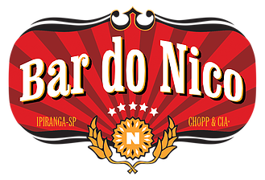

Bar do Nico
Rua Aspicuelta, 46 - Vila Madalena, São Paulo - SP

Horário de funcionamento: 14:00 as 22:00 (terça a domingo)
Musica ao vivo: aos sábados e domingos
Preço: $$$
Avaliação: ★★★★★
Fundado em 1968, o Bar do Nico recebe esse nome devido ao seu fundador Nico Lopez.
Atualmente o bar é tocado pelos dois filhos do Seu Nico. Famoso pela sua caipirinha e
sua deliciosa panceta frita, o Bar do Seu Nico é ponto de referência na Rua Aspicuelta